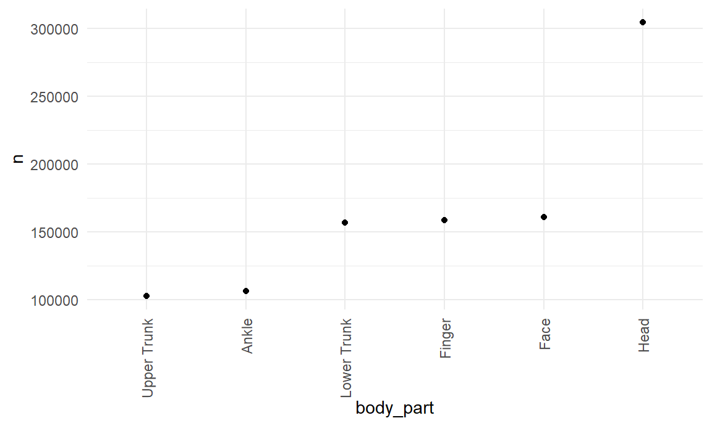
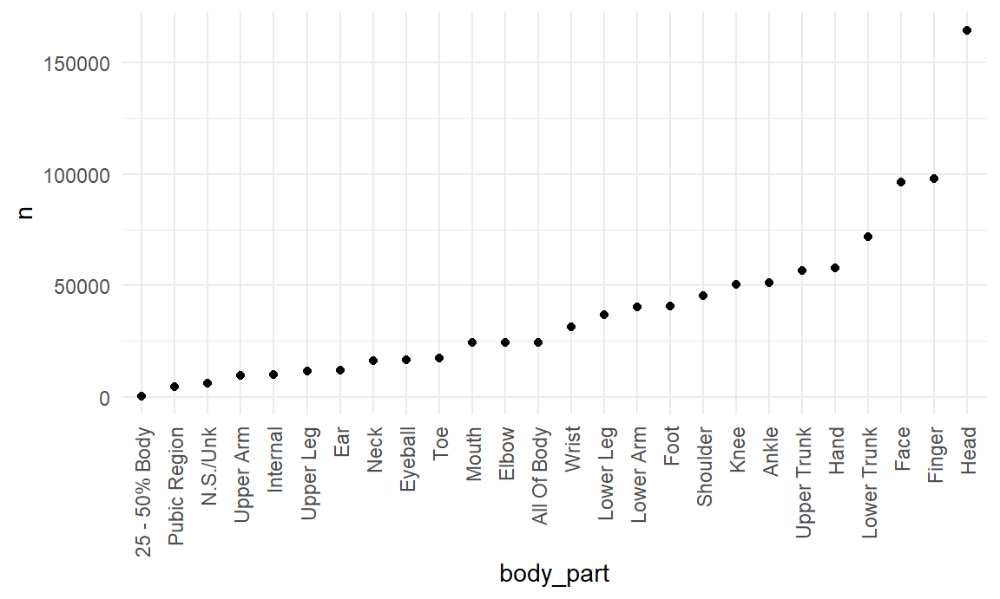
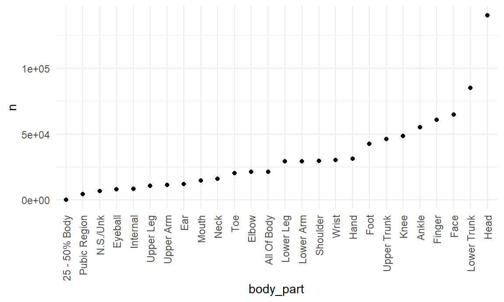
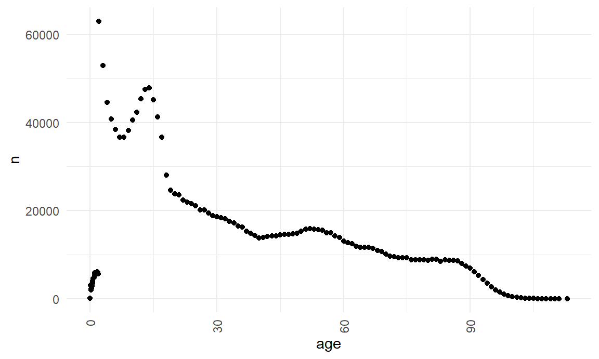

# Plot of most common injured body part overall
injuries %>%
count(body_part) %>%
filter(n > 100000) %>%
arrange(desc(n)) %>%
mutate(
body_part = factor(body_part),
body_part = fct_reorder(body_part, n)
) %>%
ggplot(aes(x = body_part, y = n)) +
geom_point() +
theme(axis.text.x = element_text(angle = 90, vjust = 0.5, hjust = 1))
# Table of top 3 causes for the top three injured body parts
injuries %>%
filter(body_part %in% c("Head", "Face", "Finger")) %>%
group_by(body_part) %>%
count(prod1) %>%
mutate(rank = min_rank(desc(n))) %>%
filter(rank < 4) %>%
arrange(body_part, rank) %>%
knitr::kable()| body_part | prod1 | n | rank |
|---|---|---|---|
| Face | 1807 | 13909 | 1 |
| Face | 1842 | 10425 | 2 |
| Face | 4076 | 10412 | 3 |
| Finger | 464 | 25350 | 1 |
| Finger | 1893 | 14924 | 2 |
| Finger | 1205 | 10751 | 3 |
| Head | 1807 | 44220 | 1 |
| Head | 1842 | 25817 | 2 |
| Head | 4076 | 25406 | 3 |
# Plot of most common injured body part for Males
injuries %>%
filter(sex == "Male") %>%
count(body_part) %>%
arrange(desc(n)) %>%
mutate(
body_part = factor(body_part),
body_part = fct_reorder(body_part, n)
) %>%
ggplot(aes(x = body_part, y = n)) +
geom_point() +
theme(axis.text.x = element_text(angle = 90, vjust = 0.5, hjust = 1))
# Table of top 3 causes for the top three injured body parts for Males
injuries %>%
filter(sex == "Male", body_part %in% c("Head", "Face", "Finger")) %>%
group_by(body_part) %>%
count(prod1) %>%
mutate(rank = min_rank(desc(n))) %>%
filter(rank < 4) %>%
arrange(body_part, rank) %>%
knitr::kable()| body_part | prod1 | n | rank |
|---|---|---|---|
| Face | 1807 | 6486 | 1 |
| Face | 4057 | 6269 | 2 |
| Face | 1842 | 5660 | 3 |
| Finger | 464 | 14490 | 1 |
| Finger | 1205 | 8225 | 2 |
| Finger | 1893 | 7420 | 3 |
| Head | 1807 | 19268 | 1 |
| Head | 1842 | 12492 | 2 |
| Head | 4076 | 12430 | 3 |
# Plot of most common injured body part for Females
injuries %>%
filter(sex == "Female") %>%
count(body_part) %>%
arrange(desc(n)) %>%
mutate(
body_part = factor(body_part),
body_part = fct_reorder(body_part, n)
) %>%
ggplot(aes(x = body_part, y = n)) +
geom_point() +
theme(axis.text.x = element_text(angle = 90, vjust = 0.5, hjust = 1))
# Table of top 3 causes for the top three injured body parts for Females
injuries %>%
filter(sex == "Female", body_part %in% c("Head", "Face", "Lower Trunk")) %>%
group_by(body_part) %>%
count(prod1) %>%
mutate(rank = min_rank(desc(n))) %>%
filter(rank < 4) %>%
arrange(body_part, rank) %>%
knitr::kable()| body_part | prod1 | n | rank |
|---|---|---|---|
| Face | 1807 | 7423 | 1 |
| Face | 4076 | 4838 | 2 |
| Face | 1842 | 4765 | 3 |
| Head | 1807 | 24952 | 1 |
| Head | 1842 | 13324 | 2 |
| Head | 4076 | 12976 | 3 |
| Lower Trunk | 1807 | 15498 | 1 |
| Lower Trunk | 1842 | 11668 | 2 |
| Lower Trunk | 4076 | 6770 | 3 |
injuries %>%
separate(trmt_date, c("year","month","day"), sep = "-")## # A tibble: 1,865,651 x 20
## case_num year month day age sex race race_other body_part diag
## <chr> <chr> <chr> <chr> <dbl> <chr> <chr> <chr> <chr> <chr>
## 1 1301049~ 2013 01 01 57 Male White <NA> Face Cont~
## 2 1301049~ 2013 01 01 0.583 Fema~ Asian <NA> Head Inte~
## 3 1301049~ 2013 01 01 59 Fema~ White <NA> Lower Tr~ Cont~
## 4 1301049~ 2013 01 01 17 Fema~ White <NA> Ankle Stra~
## 5 1301049~ 2013 01 01 38 Male White <NA> Finger Lace~
## 6 1301049~ 2013 01 01 39 Fema~ White <NA> Wrist Frac~
## 7 1301049~ 2013 01 01 1.58 Male Other hisp All Of B~ Pois~
## 8 1301050~ 2013 01 01 10 Fema~ Not ~ <NA> Foot Stra~
## 9 1301052~ 2013 01 01 37 Male White <NA> Knee Lace~
## 10 1301052~ 2013 01 01 34 Male White <NA> Ankle Stra~
## # ... with 1,865,641 more rows, and 10 more variables: diag_other <chr>,
## # disposition <chr>, location <chr>, fmv <chr>, prod1 <dbl>, prod2 <dbl>,
## # stratum <chr>, psu <dbl>, weight <dbl>, narrative <chr>injuries %>%
count(age) %>%
arrange(desc(n)) %>%
ggplot(aes(x = age, y = n)) +
geom_point() +
theme(axis.text.x = element_text(angle = 90, vjust = 0.5, hjust = 1))